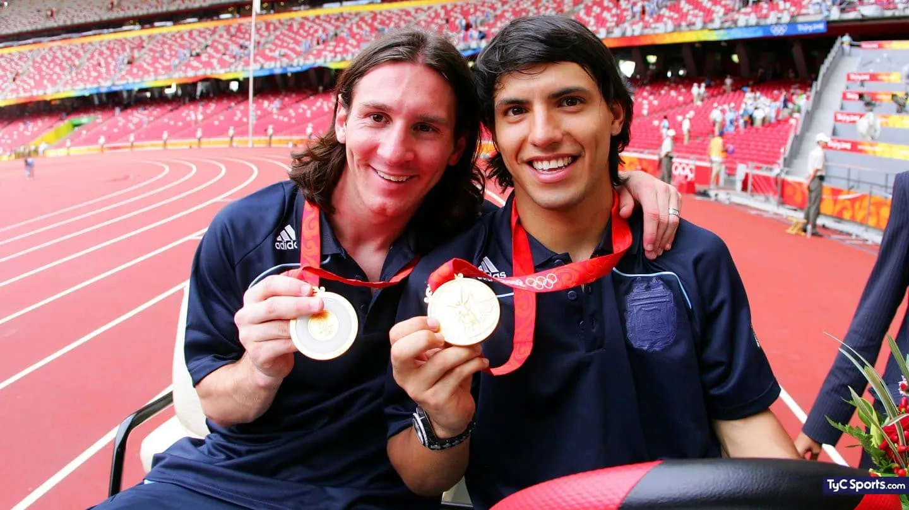
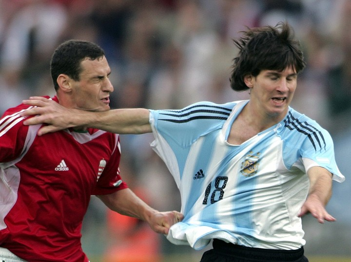
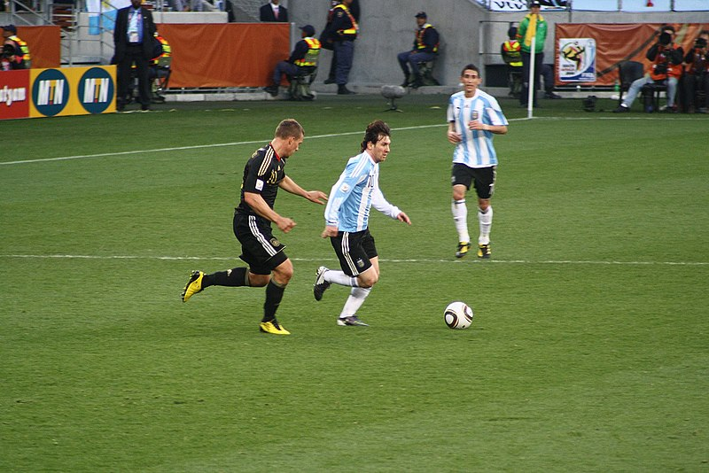

- seleccion argentina de fubol
- categorias inferiores
- El 29 de junio de 2004, casi desconocido en Argentina, debutó en el estadio Diego Armando Maradona de Buenos Aires con la categoría sub 20, en un partido amistoso con una sub 22 de Paraguay armada para la ocasión que arbitró Gabriel Brazenas. Ingresó en el segundo tiempo por Ezequiel Lavezzi e hizo un gol y dos asistencias en un encuentro que finalizó 8-0 a favor de Argentina. El 3 de julio, contra Uruguay en el estadio Suppicci de Colonia, hizo un doblete en otro amistoso que Argentina ganó 4-1. Con solo estos dos partidos jugados, a fines de diciembre Tocalli lo convocó para el Sudamericano Sub 20 de principios del año siguiente, aunque, por decisión conjunta con Pékerman, jugaría siempre como suplente

- seleccion mayor
- debut oficial y en mundial
- El 2 de agosto de 2005, Pékerman convocó por primera vez a Messi para jugar con la selección absoluta. El jugador debutó el 17 de agosto en un amistoso con Hungría que Argentina ganó 2-1 en el estadio Ferenc Puskás de Budapest. Ingresó en el minuto 66 y llegó a tocar tres pelotas, pero 1m32s después fue expulsado por Markus Merk tras un gesto brusco hacia el defensor Vilmos Vanczák, que lo había tironeado de la camiseta. Aunque Messi había jugado sólo tres partidos por eliminatorias, el 16 de mayo Pékerman confirmó que lo había incluido en la lista de veintitrés para el Mundial de Alemania

- mundial 2010
- Messi llegó con una gran presión al Mundial de Sudáfrica, debido a que varios lo consideraban el sucesor de Maradona y su campaña en el Barcelona lo perfilaba para ser la gran figura del torneo. El 12 de junio, en el 1-0 contra Nigeria, tuvo un muy buen partido y fue, según el periodista Horacio Pagani, "el responsable del 90 % de las maniobras ofensivas". El 17, contra Corea del Sur, a pesar de jugar más retrasado, funcionó como organizador, enganche y delantero y tuvo incidencia en los cuatro goles del 4-1. Para el encuentro contra Grecia el 22, y ante la ausencia de Mascherano en el plantel, Maradona designó capitán a Messi que, con veintidós años, se convirtió en el argentino más joven en cumplir ese papel en un mundial. Argentina ganó 2-0 y Messi fue elegido Jugador Budweiser del partido. El 27, en octavos de final frente a México, Argentina ganó 3-1, pero fue eliminada el 3 de julio en cuartos de final, tras perder 4-0 contra Alemania.
